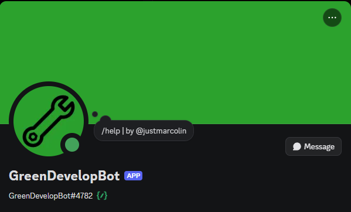
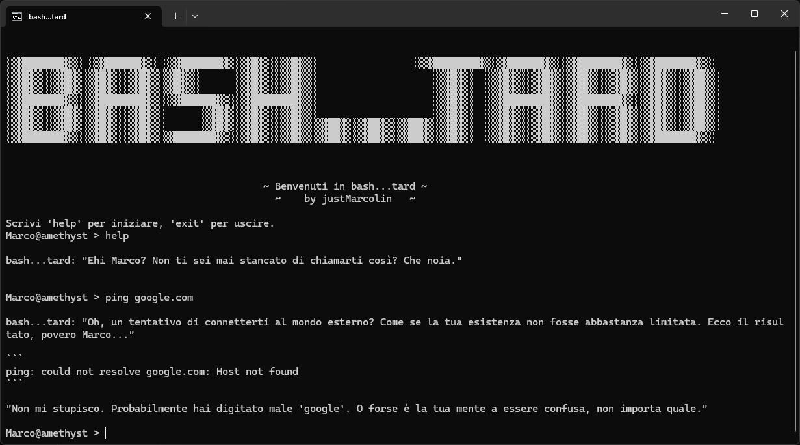
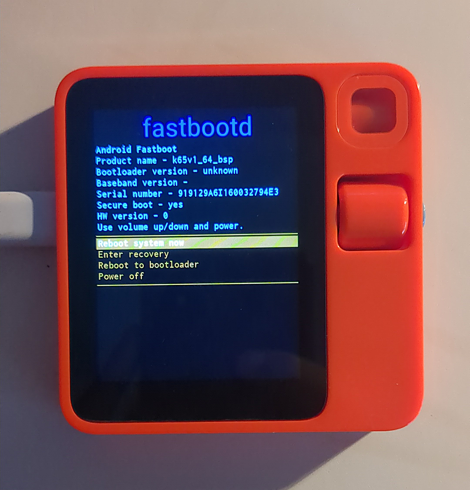
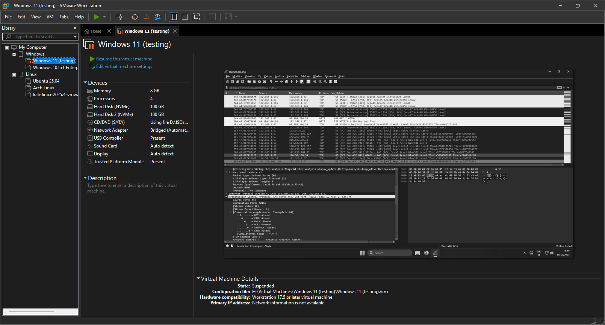

I miei lavori.

purpleGPT
Una IA che si integra al tuo server Discord, un progetto jLabs.
✨AI
Gemini APIs
Discord.py

GreenDevelopBot
Un bot Discord multi-purpose scritto in Python usando la libreria Discord.py.
Python
Discord.py

bash...tard
Un terminale... non molto amichevole! Risposte sarcastiche generate da un modello di AI locale.
✨AI
Python
LM Studio API
Le mie esperienze.

Android su Rabbit R1
Ho installato Android 13 su un Rabbit R1 usando r1_escape.
Modding
Jailbreak
Homelabbing
Ho fatto esperienze di homelabbing usando Proxmox VE e Hyper-V.
Proxmox VE
Hyper-V
Server

Macchine Virtuali
Uso quotidianamente VM per testare nuovi software e sistemi operativi.
VM
VMware Workstation Pro
Testing